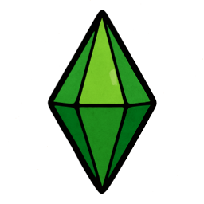

🎁 Objets disponibles 🎁
Règles communes :
- Chaque joueur peut conserver jusqu'à 3 objets en réserve.
- On ne peut utiliser qu'un objet par tour.
- Les objets apparaissent aléatoirement dans des caisses sur le plateau.
- Le poids d'un objet détermine sa rareté (plus le poids est élevé, plus l'objet est rare).
Bob-omb Poids: 4

Bombe explosive de Mario ! Place une bombe sur une case vide qui explosera au prochain tour.
La bombe endommage toutes les pièces adjacentes (alliées et ennemies). Parfait pour créer des zones de danger ou éliminer plusieurs pièces d'un coup. Inspiré de Super Mario Bros.
Portails Poids: 4

Téléportation instantanée ! Crée deux portails connectés sur le plateau.
Placez deux portails sur des cases vides. Toute pièce entrant dans un portail ressort instantanément de l'autre. Parfait pour les mouvements tactiques et les échappatoires. Inspiré de Portal.
Foudre Poids: 1

Éclair destructeur ! Élimine instantanément une pièce de votre choix.
Choisissez n'importe quelle pièce sur le plateau (alliée ou ennemie) pour l'éliminer immédiatement. Puissant mais coûteux, parfait pour éliminer des menaces majeures. Inspiré de la magie élémentaire classique.
Étoile Poids: 2

Révélation mystique ! Révèle toutes les pièces cachées sur le plateau pendant 3 tours.
Permet de voir les pièces adverses même si elles sont normalement invisibles. Utile pour planifier des attaques ou éviter des pièges. Inspiré de Super Mario Bros, l'étoile apporte la clairvoyance.
Tetrimino Poids: 3

Bloc de construction ! Place un mur Tetrimino sur le plateau.
Crée un obstacle permanent sur le plateau qui bloque les mouvements. Parfait pour contrôler les zones de passage ou protéger des positions stratégiques. Inspiré de Tetris.
Tornade Poids: 2

Vent destructeur ! Téléporte une pièce à une position aléatoire du plateau.
Choisissez une pièce qui sera téléportée vers une case aléatoire libre. Peut créer des situations inattendues et tactiques. Inspiré des phénomènes météorologiques extrêmes.
Banane Poids: 5

Piège glissant ! Place une banane sur une case vide qui fera glisser la prochaine pièce qui s'y arrête.
La pièce qui atterrit sur la banane glisse vers la case suivante dans la direction de son mouvement. Peut créer des situations inattendues et tactiques. Inspiré de Mario Kart, la banane est un piège classique.
Phoenix Poids: 2

Renaissance ! Ressuscite une pièce perdue de votre faction.
Choisissez une pièce que vous avez perdue pour la faire revenir sur le plateau. Parfait pour compenser les pertes ou renforcer votre armée. Inspiré de la mythologie du phénix.
Cursor Sims Poids: 3
Contrôle total ! Prend le contrôle d'une pièce adverse pendant 1 tour.
Vous pouvez déplacer la pièce adverse comme si c'était la vôtre. Idéal pour créer des situations tactiques ou éliminer des menaces. Inspiré de The Sims, ce curseur magique permet de manipuler les autres.
Cœur Poids: 2

Vie supplémentaire ! Protège une pièce de la capture pendant 2 tours.
La pièce protégée ne peut pas être capturée, même par le roi adverse. Parfait pour protéger une pièce importante ou créer une diversion. Inspiré de The Legend of Zelda, le cœur apporte la protection divine.
Sablière du Temps Poids: 3

Le temps de l'adversaire s'effrite ! Réduit le chrono de tous les adversaires selon la taille du plateau.
9×9 : -1 minute | 11×11 : -2 minutes | 15×15 : -3 minutes
Cet objet ne fonctionne que si le timer est activé. Inspiré de Prince of Persia: The Sands of Time, il permet de prendre l'avantage temporel sur ses ennemis.
Cet objet ne fonctionne que si le timer est activé. Inspiré de Prince of Persia: The Sands of Time, il permet de prendre l'avantage temporel sur ses ennemis.
Masque de Majora Poids: 4

Le masque maudit de Termina ! Force un adversaire à jouer une pièce spécifique lors de son prochain tour.
Choisissez une pièce adverse que l'adversaire sera obligé de déplacer. L'effet disparaît après que la pièce ait joué. Inspiré de The Legend of Zelda: Majora's Mask, ce masque maléfique manipule les esprits.
Ocarina du Temps Poids: 3

L'instrument magique d'Hyrule ! Transforme permanentement une pièce en cavalier (mouvements en L).
Choisissez n'importe quelle pièce (alliée ou ennemie) qui se déplacera désormais comme un cavalier d'échecs. L'ocarina reste visible au-dessus de la pièce. Inspiré de The Legend of Zelda: Ocarina of Time, cet objet légendaire change les règles du jeu.